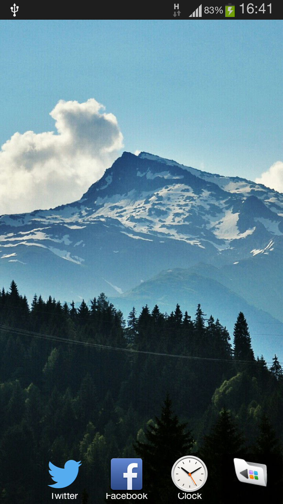
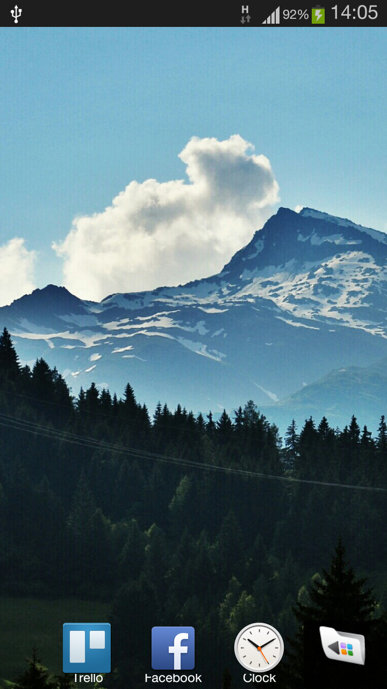
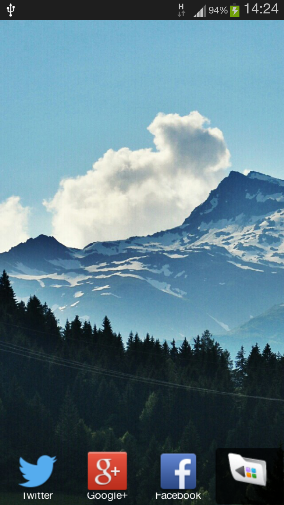

This repository is a modified version of sample Android Launcher, a.k.a. Home, from Android SDK. This page contains the APK of the versions. APK is made for and tested on Galaxy SIII. For the code changes, see commit in GitHub repo - commit message will explain some stuff.
3 February 2014 #2

Changes:
- Wallpaper bound is calculated to be centered.
- Wallpaper is centered - I tested some wallpapers and found no bugs for now.
3 February 2014 #1

Changes:
- Icon size used from resources is changed to commented function call.
- Added SDK specification to manifest file.
- Icon resolution no longer broken - I tried not adding SDK specification and playing with icon size and icon resource interchangebly, but the resolution is still broken. You need these changes and changes from 26 January 2014 on icon size to make the icon resolution to be sharp. Using icon size of 42 (i.e. reverting changes from 26 January 2014) will make icons in recent app stack at the bottom of the home screen to be very small.
- Application titles are still cut off - I believe this needs rework on margin of icon.
26 January 2014

Changes:
- Icon size is changed to be the commented function call.
- Icon is displayed larger - you could see some of the letters being cut off because of the bigger icon. I believe that's because now the application calls for bigger icon to be used, but rendered wrongly so that it is enlarged thus the low resolution look.
09 January 2014
Compiled initial sample project files with all localization values removed. The icon resolution is broken for the phone.